Habix bringt Gewohnheiten, Aufgaben, Kalender, Training und deine Fortschritte in eine ruhige, schnelle Desktop-App. Ohne Konto, ohne Abo, und deine Daten bleiben auf deinem PC.
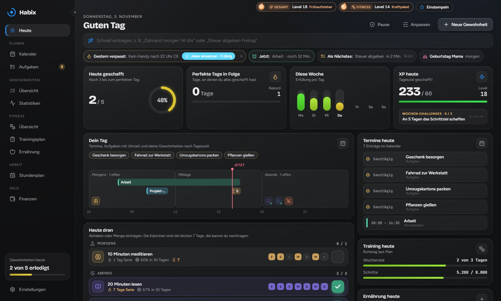
Musik: „Long Road“ von Infraction
Eine Zeitleiste zeigt Termine, Aufgaben und deine Gewohnheiten nach Tageszeit. Dazu siehst du, was als Nächstes ansteht und wie weit du beim XP-Tagesziel bist.
Abhaken oder Mengen zählen, morgens, mittags oder abends. In der Monatsübersicht trägst du Vergessenes einfach nach.
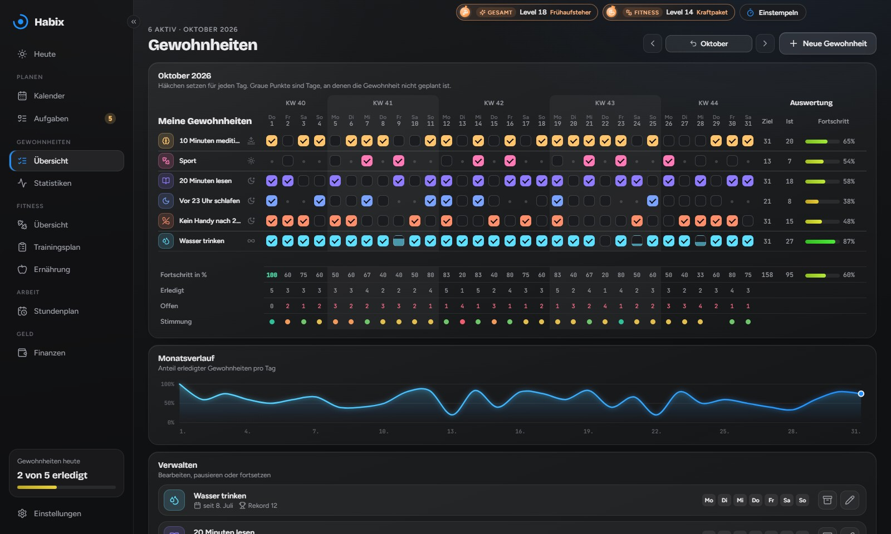
Verläufe, Vergleiche mit dem Zeitraum davor, deine stärksten Wochentage und eine Aktivitätskarte. Von Rot bis Grün auf einen Blick.
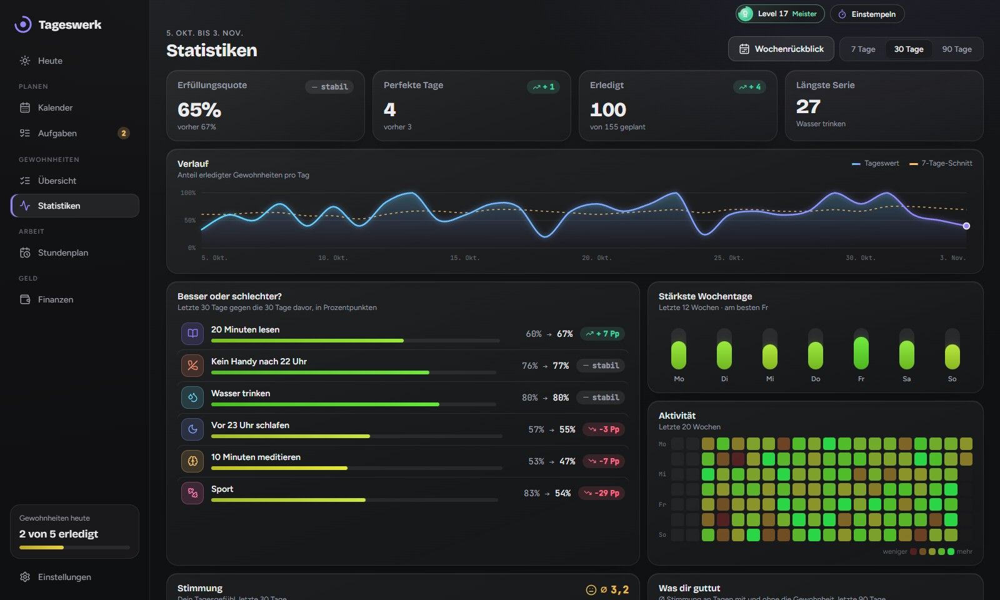
Monats- und Wochenansicht, Termine per Maus verschieben, Aufgaben mit Fälligkeit. Google, Outlook und Apple lassen sich einbinden.
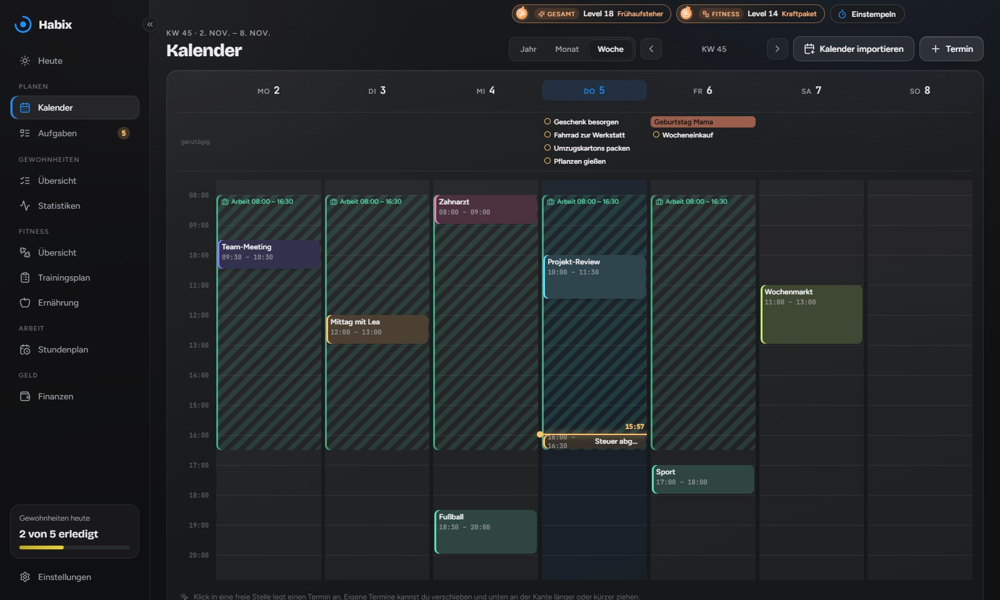
Für Gewohnheiten, Aufgaben und deine Stimmung sammelst du XP und steigst auf: Hustler, Beast, Boss, Champion, Titan und weiter bis zum GOAT. Für jeden Rang wartet eine Prüfung, und jede Woche kommen drei neue Challenges.
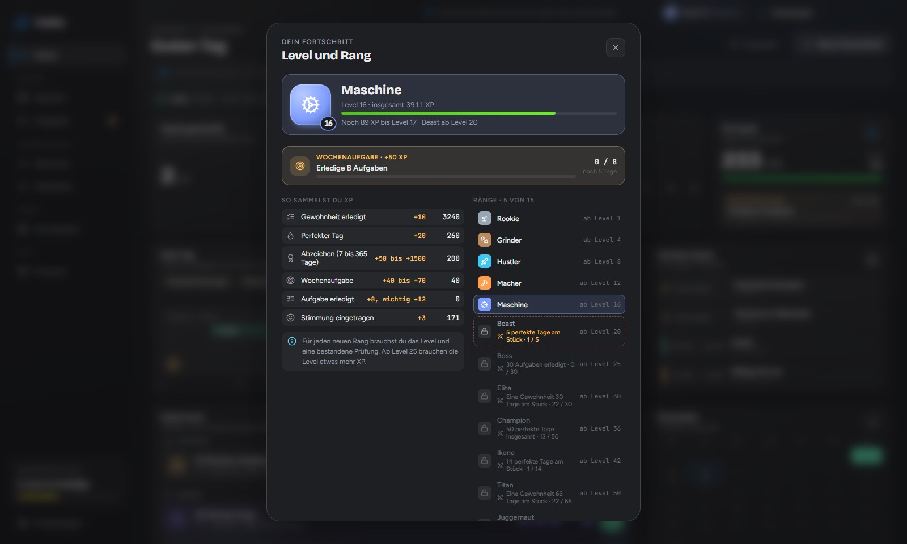
Alle Ränge, Abzeichen und Erfolge an einem Ort. Dazu schaltest du Titel wie „Frühaufsteher“ oder „Serientäter“ und neue Farben für deine Level-Anzeige frei.
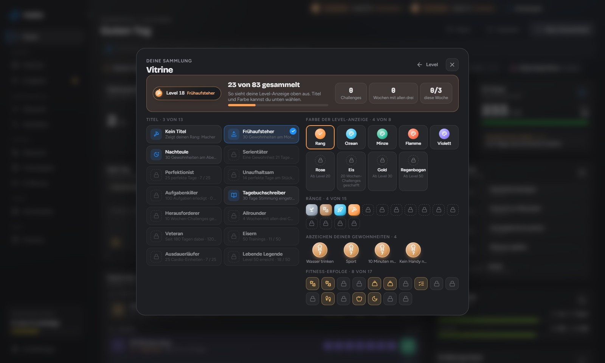
Trainingstage planen, Sätze live abhaken, Kalorien, Wasser, Schlaf und Gewicht im Blick. Fitness hat ein eigenes Level mit 13 Rängen vom Neuling bis Unbesiegbar.
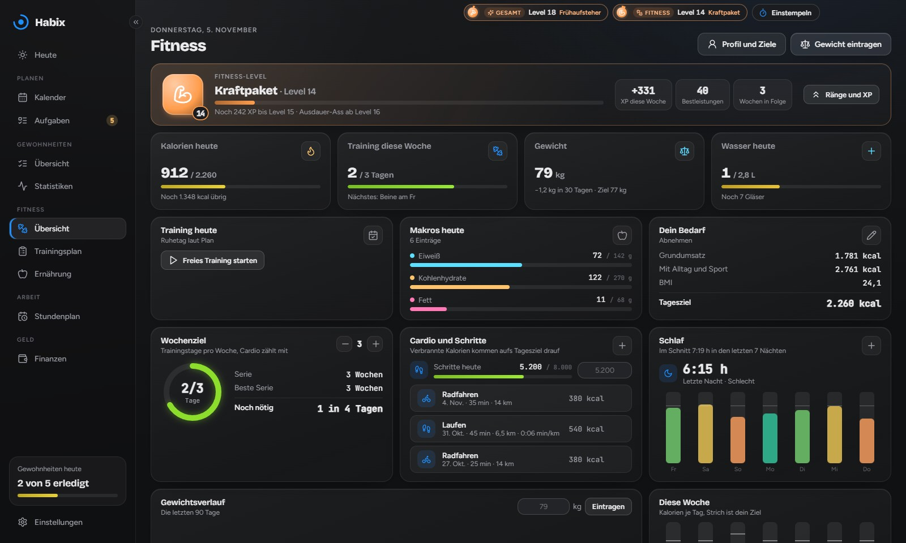
Einfach tippen, wie du es sagen würdest. Habix erkennt Tag und Uhrzeit und legt Termin oder Aufgabe an.
Fahr mit der Maus über das Bild. Oder lass Habix einfach Windows oder dem Mac folgen.
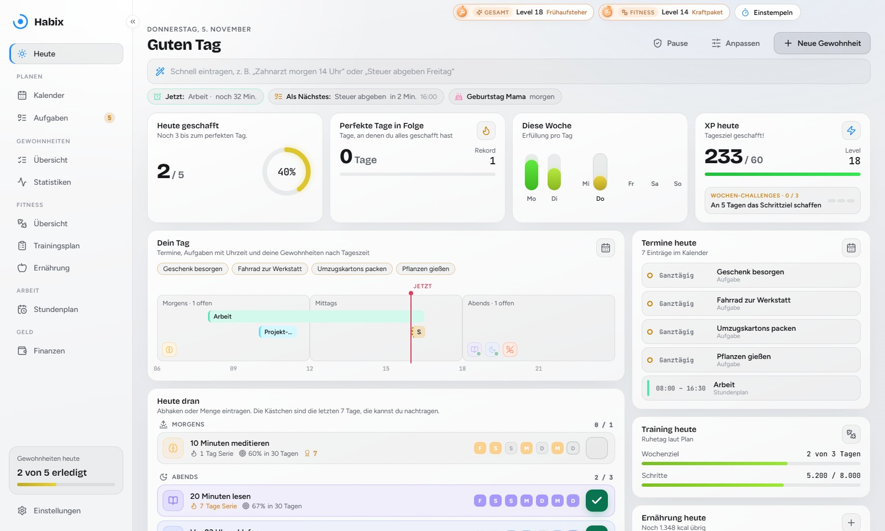
Karten per Ziehen umsortieren, ausblenden und wieder einblenden. Die anderen machen weich Platz.
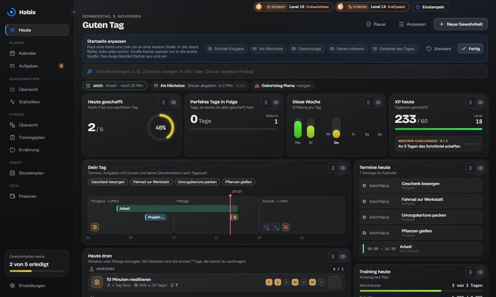
Leg deine Daten in einen OneDrive-, Dropbox- oder Google-Drive-Ordner. Laptop und Desktop bleiben von selbst gleich.
Kein Konto, keine Cloud, keine Werbung. Mit automatischer Sicherung jede Woche.
Dein Rechner meldet sich vor Terminen und abends, wenn noch etwas offen ist.
Neue Versionen kommen im Hintergrund und werden beim nächsten Start installiert.
Ein paar Joker-Tage pro Monat und ein Urlaubsmodus für Reisen oder Krankheit. Deine Serien laufen weiter, Wochenziele und Challenges werden kleiner.
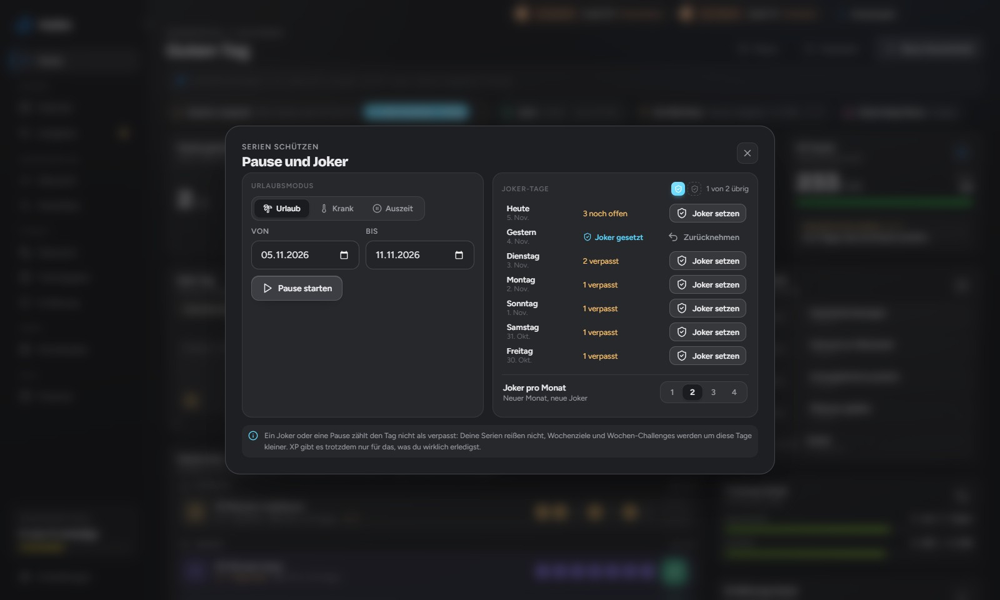
Beim ersten Öffnen am Tag fragt Habix kurz nach Stimmung und Schlaf und zeigt, was heute ansteht.
Habix bleibt aufgeräumt. Fitness, Arbeitszeit und Finanzen sind zuerst ausgeblendet und lassen sich mit einem Klick dazuschalten.
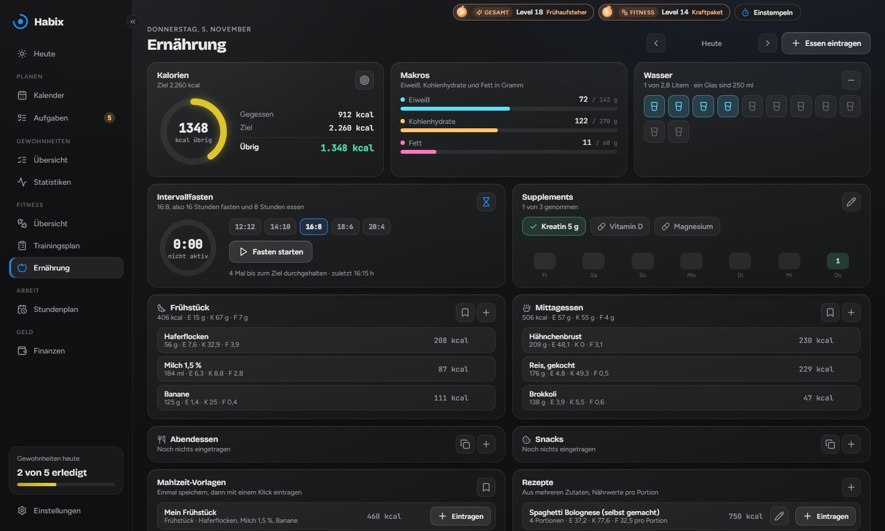
Trainingsplan, Sätze live abhaken, Kalorien und Makros, Wasser, Schlaf und Gewicht. Mit eigenem Fitness-Level neben deinem Gesamt-Level.
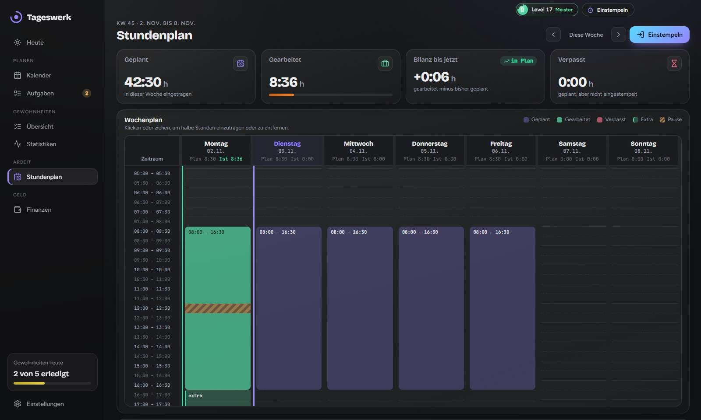
Stundenplan in halben Stunden, Ein- und Ausstempeln mit Pausen, auch über das Symbol in der Taskleiste. Grün heißt gearbeitet, rot heißt verpasst.
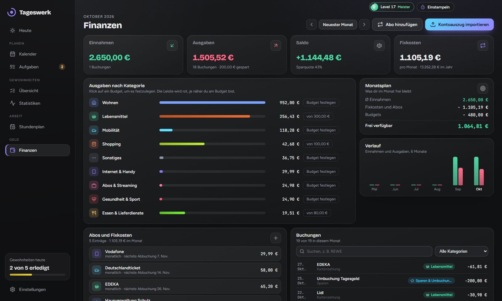
Kontoauszug als CSV hochladen: Ausgaben nach Kategorien, Abos und Budgets. Ohne Bank-Login, die Datei bleibt auf deinem PC.
Nein. Habix ist komplett kostenlos, ohne Abo, ohne Werbung und ohne Konto.
Ja. Windows zeigt „Der Computer wurde durch Windows geschützt“, weil die Datei nicht mit einem kostenpflichtigen Zertifikat signiert ist. Klick auf „Weitere Informationen“ und dann auf „Trotzdem ausführen“. Den Quellcode kannst du auf GitHub ansehen.
Nichts Schlimmes. Klick auf der Startseite auf „Pause“ und starte den Urlaubsmodus, oder setz für einzelne verpasste Tage einen Joker (standardmäßig zwei pro Monat). Solche Tage zählen nicht als verpasst, deine Serien laufen weiter.
In den Einstellungen meldest du dich im Browser bei Google an und wählst aus, welche Kalender in Habix erscheinen. Termine aus Google siehst du dann in Habix, und was du in Habix anlegst, verschiebst oder löschst, ändert sich auch in Google. Habix spricht dabei direkt mit Google, ohne Server dazwischen. Die Verbindung kannst du jederzeit trennen. Details stehen in der Datenschutzerklärung.
In einer Datei auf deinem Rechner, unter Windows normalerweise in %APPDATA%\Habix, auf dem Mac in ~/Library/Application Support/Habix. In den Einstellungen kannst du einen anderen Ordner wählen, Sicherungen anlegen und wiederherstellen.
Ja. Wähl in den Einstellungen unter „Daten“ auf beiden PCs denselben Ordner in OneDrive, Dropbox oder Google Drive. Speichert ein PC, übernimmt der andere die Änderungen nach ein paar Sekunden.
Das ist normal, weil Habix nicht bei Apple registriert ist. Zieh Habix aus der heruntergeladenen Datei in den Ordner „Programme“ und öffne es einmal. Wenn die Warnung kommt, klick auf „Fertig“, öffne Systemeinstellungen → Datenschutz & Sicherheit und klick unten bei Habix auf „Dennoch öffnen“. Danach startet Habix ganz normal.
Für Windows 10 und 11 und für den Mac ab macOS 12, sowohl mit Apple-Chip als auch mit Intel. Fürs Handy gibt es Habix noch nicht.
Unter Windows automatisch: Habix sucht beim Start und alle 6 Stunden nach einer neuen Version, lädt sie im Hintergrund und installiert sie beim nächsten Neustart. Auf dem Mac meldet sich Habix, wenn es eine neue Version gibt. Die lädst du hier herunter und ziehst sie in „Programme“, deine Daten bleiben dabei erhalten.
Lade Habix herunter und leg deine erste Gewohnheit an. Es dauert keine Minute.
Für Windows herunterladen